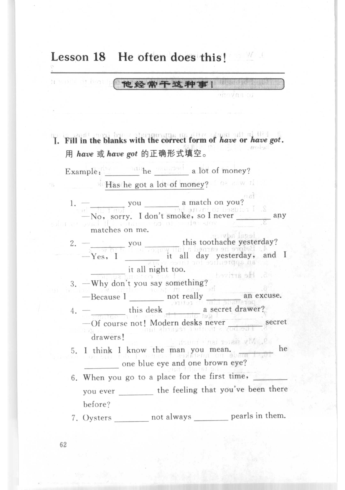
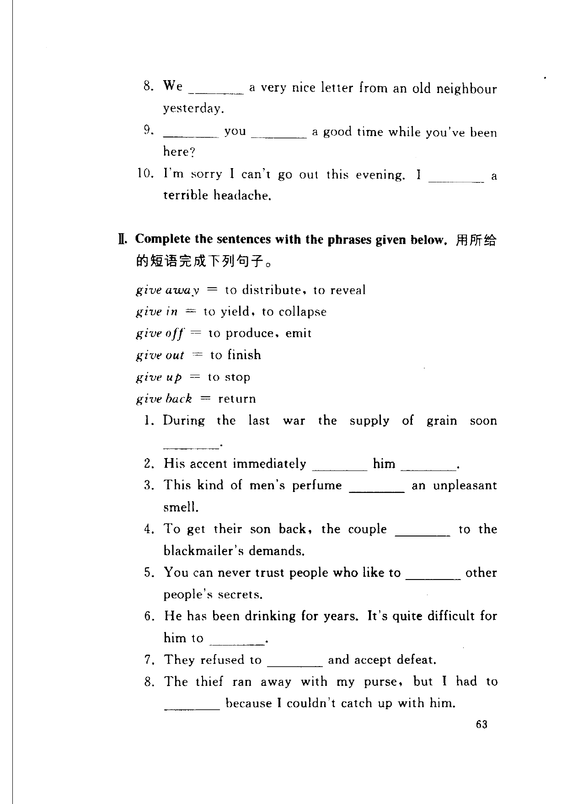
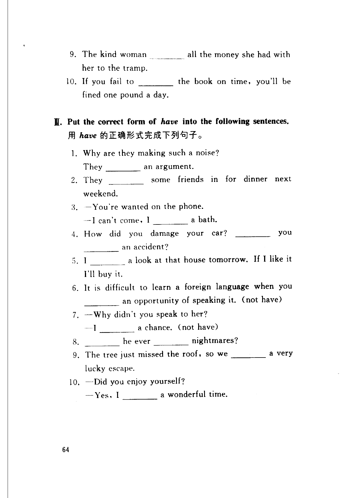

Grammar exercises · 语法练习
I. Fill in the blanks with the correct form of have or have got.
用 have 或 have got 的正确形式填空。
Example · 例句
___ he ___ a lot of money?
Has he got a lot of money?
-
I. have/have got — — you a match on you? — No, sorry. I don't smoke, so I never any matches on me.
-
I. have/have got — — you this toothache yesterday? — Yes, I it all day yesterday, and I it all night too.
-
I. have/have got — — Why don't you say something? — Because I not really an excuse.
-
I. have/have got — — this desk a secret drawer? — Of course not! Modern desks never secret drawers!
-
I. have/have got — I think I know the man you mean. he one blue eye and one brown eye?
-
I. have/have got — When you go to a place for the first time, you ever the feeling that you've been there before?
-
I. have/have got — Oysters not always pearls in them.
-
I. have/have got — We a very nice letter from an old neighbour yesterday.
-
I. have/have got — you a good time while you've been here?
-
I. have/have got — I'm sorry I can't go out this evening. I a terrible headache.
II. Complete the sentences with the phrases given below.
用所给的短语完成下列句子。
give away = to distribute, to reveal
give in = to yield, to collapse
give off = to produce, emit
give out = to finish
give up = to stop
give back = return
-
II. give phrases — During the last war the supply of grain soon .
-
II. give phrases — His accent immediately him .
-
II. give phrases — This kind of men's perfume an unpleasant smell.
-
II. give phrases — To get their son back, the couple to the blackmailer's demands.
-
II. give phrases — You can never trust people who like to other people's secrets.
-
II. give phrases — He has been drinking for years. It's quite difficult for him to .
-
II. give phrases — They refused to and accept defeat.
-
II. give phrases — The thief ran away with my purse, but I had to because I couldn't catch up with him.
-
II. give phrases — The kind woman all the money she had with her to the tramp.
-
II. give phrases — If you fail to the book on time, you'll be fined one pound a day.
III. Put the correct form of have into the following sentences.
用 have 的正确形式完成下列句子。
-
III. have — Why are they making such a noise? They an argument.
-
III. have — They some friends in for dinner next weekend.
-
III. have — — You're wanted on the phone. — I can't come, I a bath.
-
III. have — How did you damage your car? you an accident?
-
III. have — I a look at that house tomorrow. If I like it I'll buy it.
-
III. have — It is difficult to learn a foreign language when you an opportunity of speaking it. (not have)
-
III. have — — Why didn't you speak to her? — I a chance. (not have)
-
III. have — he ever nightmares?
-
III. have — The tree just missed the roof, so we a very lucky escape.
-
III. have — — Did you enjoy yourself? — Yes, I a wonderful time.
Original images · 原图对照
Expand a page to compare it with the transcription. Open the original in a new tab to zoom in.
展开原图核对文字，也可以在新标签页打开原图放大查看。
Book page 1 · Exercise I (have/have got, items 1–7)
Open original · 打开原图 ↗ Download original · 下载原图


Book page 2 · Exercise I (items 8–10) and Exercise II (give phrases, items 1–8)
Open original · 打开原图 ↗ Download original · 下载原图


Book page 3 · Exercise II (items 9–10) and Exercise III (have, items 1–10)
Open original · 打开原图 ↗ Download original · 下载原图


Your notes and answers
Use this space for longer responses or exercises that do not have an individual answer box.